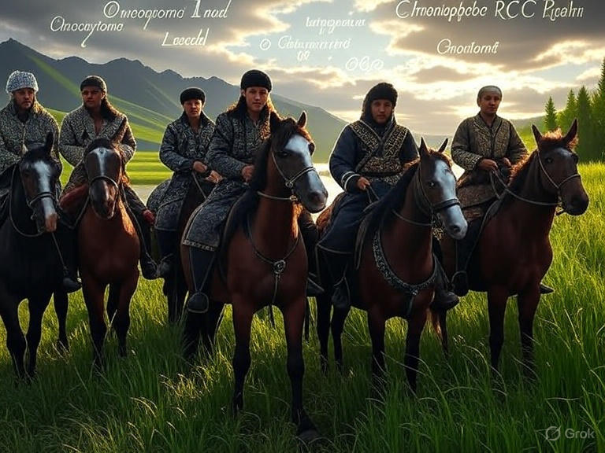

Ey dinleyenler! Eski çağlarda, Orta Asya'nın bozkırlarında Kızıl Türk boyları yaşardı. Bir gün büyük bir kuraklık vurdu diyarları. Boy beyleri toplandı, dediler ki: "Göç edelim, yeni yurtlar bulalım!" Böylece atlarına bindiler, dağları aştılar, nehirleri geçtiler. Yolculukta ayrıldılar, her boy bir fantastik ülke kurdu: Onkositoma Ülkesi, Kromofob Renal Hücreli Karsinom Diyarı, Düşük Dereceli Onkositik Tümör Toprakları, Süksinat Dehidrogenaz Eksik Renal Hücreli Karsinom Krallığı, Fumarat Hidrataz Eksik Renal Hücreli Karsinom İmparatorluğu ve daha niceleri. Bu ülkeler, eozinofilik hücre kümeleri gibi, edematöz bağ dokusu adalarında yükseliyordu.
Resim 1:  (AI Prompt: "Sinematik epik sahne: Orta Asya bozkırlarından göç eden Kızıl Türk boyları, atlı savaşçılar, arka planda dağlar ve nehirler, fantastik ülkeler isimleri (Onkositoma Ülkesi, Kromofob RCC Diyarı) gökyüzünde parlayan yazılarla, Dede Korkut tarzı eski Türk efsanesi havası, yüksek çözünürlük, dramatik ışık.")
Sonraki Bölüm: Bölüm 2 | Ana Sayfa
Hikayedeki göç, onkositik renal tümörlerin çeşitliliğini simgeler: Onkositoma, Kromofob RCC vb. gibi, hepsi morfolojiye dayalı ayrılır. Gerçekte, tanı morfolojiyle başlar, IHC ile desteklenir.